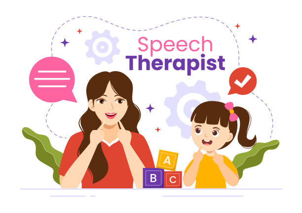

Speech Therapy & Audiology Clinic

Vagishwari Therapy Centre is a dedicated Speech Therapy and Audiology clinic committed to enhancing communication and improving quality of life for children and adults. We provide professional, evidence-based assessment and therapy services in a compassionate and supportive environment.
Communication plays a vital role in learning, social interaction, and personal growth. Our team focuses on identifying individual needs and delivering personalized therapy programs that promote effective and confident communication.
✔ Comprehensive and accurate assessments
✔ Individualized therapy plans
✔ Family-centered approach
✔ Child-friendly and professional environment
✔ Continuous monitoring of progress
If you have concerns regarding speech, language, or hearing development, we encourage you to schedule an assessment and begin your journey toward confident communication.